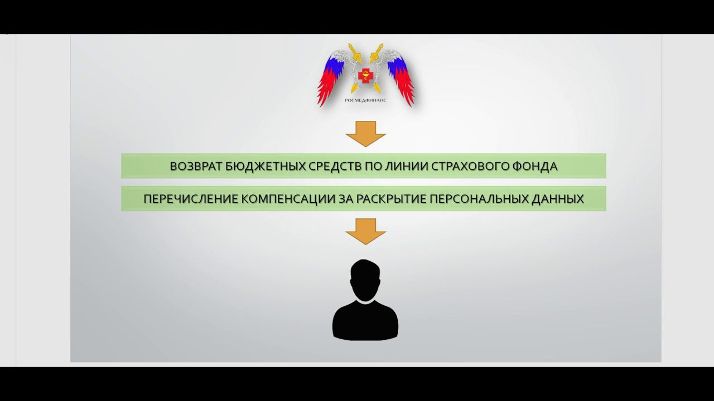

Возмещение ндс в смете при УСН 2019 год
 Все Юристы .ру Сайт юристов в сфере Налоги Популярное Комиссия банка за валютный контроль проводки 2020 год Налоги Транспортный Земельный Задолженность Ндфл Возврат Выплата Продажа Другое Карта сайта Контакты Главная › Другое
Возмещение ндс в смете при УСН 2020 год
Содержание
Компенсация НДС при УСН Смета при «упрощенке» Как исключить из сметы ЕСН Как исключить из сметы налоги на прибыль и на имущество Компенсация НДС при УСН без НДС Как включить в смету НДС, уплачиваемый поставщикам Взмещение ндс при усн Пк «гранд-смета». Вопросы и ответы 1.7. Ввод лимитированных затрат, налогов и обязательных платежей Компенсация НДС при использовании УСН Компенсация НДС в смете Формула коменсации НДС при применении упрощенной системы налогообложения Контракт заключен до 2020 года а выполнение в 2020 году, Возможно ли увеличение ЦЕНЫ КОНТРАКТА? 2 подрядчик, на упрощенной системе налогообложения (не является плательщиком НДС) Методическое пособие по ПК «ГРАНД-Смета» версия 7 Компенсация НДС при использовании УСН Возмещение НДС в гранд смете Принцип работы УСН Что делать с НДС Почему нельзя убрать показатель НДС Как выразить возмещение НДС в Гранд СметеКомпенсация НДС при УСН
5. Многие начинающие сметчики допускают большую ошибку при составлении смет по упрощенной системе налогообложения, а именно концовку сметы, получившуюся в ИТОГО», оставляют просто без НДС и считают, что это, и есть упрощенная система налогообложения, что считается неверным.
В отличии от обычного налогообложения с НДС, налог (НДС) по упрощенной системе налогообложения расчитывается по сложному расчету:
Существуют два варианта расчета НДС по упрощенной системе налогообложения:
I Вариант — это когда арендуются строительные машины;
II Вариант — это когда строительные машины собственные.
Рассмотрим I вариант (когда строительные машины арендуются):
Пример расчета сметы по упрощенной системе налогообложения:
(в текущем уровне цен)
Смета при «упрощенке»
Прежде чем выполнять строительные или ремонтные работы, на них составляют смету. В нее закладывают прямые и накладные расходы подрядчика, а также его прибыль. Подсчитать величину накладных расходов и сметной прибыли организация может исходя из собственных (индивидуальных) норм или используя утвержденные нормативы.
Однако в них заложены расходы по уплате налогов, которые предприятие, перешедшее на «упрощенку», не платит (например, расходы по уплате ЕСН, налога на прибыль и на имущество). Поэтому если, составляя смету, организация решила руководствоваться утвержденными нормативами накладных расходов и сметной прибыли, то ей нужно исключить из них расходы по уплате перечисленных налогов. В то же время в смете, наоборот, нужно предусмотреть расходы по уплате «входного» НДС поставщикам, ведь этот налог при «упрощенке» нельзя предъявить к вычету из бюджета.
Как исключить из сметы ЕСН
Расходы по уплате ЕСН с выплат, начисленных рабочим и управленческим работникам, включаются в состав накладных расходов. Это следует из Приложения 8 к Методическим указаниям по определению величины накладных расходов в строительстве (МДС 81-33.2004), утвержденным Постановлением Госстроя России от 12 января 2004 г. N 6 (далее — Постановление Госстроя России N 6).
Если организация использует утвержденные нормативы, то она может рассчитать величину накладных расходов двумя способами:
на основании нормативов накладных расходов по видам строительных и монтажных работ (приведены в Приложении 4 к Постановлению Госстроя России N 6); на основании укрупненных нормативов по основным видам строительства (приведены в Приложении 3 к Постановлению Госстроя России N 6) .Укрупненные нормативы по основным видам строительства и нормативы накладных расходов по видам строительных и монтажных работ приведены в рубрике «Справочник» на с. 85 и с. 78.
Чтобы исключить из этих нормативов расходы по уплате ЕСН, их нужно применять с коэффициентом 0,7. Так установлено в п.4.5 Постановления Госстроя России N 6.
Пример 1 .
Таким образом, сумма накладных расходов в стоимости строительства:
Подробнее о том, в каких ценах нужно составлять смету, рассказал П.В. Горячкин, руководитель Координационного центра по ценообразованию и сметному нормированию в строительстве. Интервью опубликовано в Приложении N 2, 2004, с. 8.
Как исключить из сметы налоги на прибыль и на имущество
Рассчитывая сметную прибыль, организация может воспользоваться общеотраслевыми нормативами, которые приведены в Методических указаниях по определению величины сметной прибыли в строительстве (МДС 81-25.2001). Они утверждены Постановлением Госстроя России от 28 февраля 2001 г. N 15. Однако в этом документе Госстрой России учел расходы организации по уплате налога на прибыль и на имущество. А как мы уже отмечали в начале нашей статьи, организации, которые применяют «упрощенку», эти налоги не платят (п.2 ст.346.11 Налогового кодекса РФ), поэтому из расчета их нужно исключить. А вот единый налог, уплачиваемый при «упрощенке», наоборот, учесть. Как же это сделать?
Как сказано в Письме Госстроя России от 6 октября 2003 г. N НЗ-6292/10 «О порядке определения сметной стоимости работ, выполняемых организациями, работающими по упрощенной системе налогообложения» (далее — Письмо Госстроя России N НЗ-6292/10) , в таких случаях нужно использовать норматив сметной прибыли с коэффициентом 0,9.
Текст Письма Госстроя России от 6 октября 2003 г. N НЗ-6292/10 приведен в Приложении N 1, 2004, с. 107.
Пример 2 .
Компенсация НДС при УСН без НДС
Как включить в смету НДС, уплачиваемый поставщикам
Покупая стройматериалы и конструкции у поставщиков, организации оплачивают их с учетом НДС (если, конечно, поставщики уплачивают этот налог). Однако организация, которая применяет «упрощенку», не может возместить из бюджета «входной» НДС. Если такая организация выбрала в качестве объекта налогообложения доходы, уменьшенные на расходы, то суммы налога будут списаны на расходы (пп.8 п.1 ст.346.16 Налогового кодекса РФ).
Определить расходы на оплату НДС по материальным затратам, входящим в состав прямых расходов, несложно. Достаточно умножить предполагаемую сумму этих затрат на 18 процентов. Труднее определить сумму НДС, приходящуюся на накладные расходы и сметную прибыль.
В Методических указаниях по определению величины накладных расходов в строительстве (МДС 81-33.2004) и сметной прибыли в строительстве (МДС 81-25.2001) приводится среднеотраслевая постатейная структура по элементам затрат. Эти данные можно использовать, чтобы определить сумму НДС, относящуюся к накладным расходам и прибыли, если организация при составлении смет применяет укрупненные нормативы. Такие разъяснения приведены в Письме Госстроя России N НЗ-6292/10.
Пример 3 . Продолжим предыдущие примеры. Предположим, что затраты на материалы в составе накладных расходов составляют 18,3 процента, а в составе сметной прибыли — 15 процентов. Тогда НДС, который нужно учесть в смете, будет равен:
для накладных расходов — 29 329,78 руб. (890 400 руб. х 18,3% х 18%); для сметной прибыли — 18 954 руб. (702 000 руб. х 15% х 18%).Взмещение ндс при усн
Пк «гранд-смета». Вопросы и ответы
1.7. Ввод лимитированных затрат, налогов и обязательных платежей
Рассматриваются некоторые нестандартные варианты начисления лимитированных затрат в локальной смете. В частности, подробно рассказано о том, как в ПК «ГРАНД-Смета» реализован метод расчета зимнего удорожания по индивидуальным нормативам для разных работ в смете. Также рассмотрен пример расчета НДС при упрощенной системе налогообложения.
1.7.1. Как начислить лимитированные затраты в разделах локальной сметы?
Для того чтобы начислить лимитированные затраты в разделах локальной сметы, следует в параметрах сметы на закладке Расчет + Итоги установить флажок напротив настройки Начислять лимитированные затраты в разделах . При этом следует иметь в виду, что данная настройка становится доступной только при установленном флажке Раздельное начисление итогов по разделам .
В этом случае результаты расчета лимитированных затрат можно будет увидеть на экране в итогах каждого раздела сметы. А в итогах по смете отображаются итоги по каждому разделу и общая сметная стоимость.
При расчете лимитированных затрат в разделах сметы есть одно ограничение: в разделах рассчитываются все затраты, за исключением последней главы Налоги и обязательные платежи . При необходимости начисления в разделах какого-либо налога (например, НДС) его значение следует вводить в группу Дополнительные затраты в текущих ценах .
1.7.2. Как можно начислять зимнее удорожание по разным нормативам для разных работ в локальной смете?
Как правило, размер зимнего удорожания (дополнительные затраты при производстве работ в зимнее время) рассчитывается по единому нормативу для целой локальной сметы. В этом случае необходимо в параметрах сметы перейти на закладку Лимитированные затраты и там добавить статью затрат в раздел с названием Глава 9. Прочие работы и затраты . В том случае, если статья затрат добавляется вручную, пользователь должен сам ввести наименование статьи затрат и нужное значение в соответствующие колонки:
А при неоднократном использовании одной и той же статьи затрат целесообразно внести такую статью затрат в справочник Лимитированные затраты . Справочник открывается нажатием кнопки Справочник в отдельном окне, добавление статьи затрат из справочника в параметры сметы производится методом перетаскивания мышью.
Оба эти документа есть в базе данных информационно-справочной системы «ГРАНД-СтройИнфо» в разделе Методическая документация – Сметные нормативы . В разделе 2 вышеназванных документов приведены нормативы зимнего удорожания по конструкциям и видам работ для разных температурных зон:
Для того чтобы можно было использовать данную информацию при составлении локальных смет, она внесена в справочник Зимние удорожания . Нажатием соответствующей кнопки можно выбирать в этом справочнике для просмотра нормативы для нужной температурной зоны:
Рассмотрим необходимые действия для использования в позициях сметы разных нормативов зимнего удорожания (по конструкциям и видам работ).
Сначала необходимо в параметрах сметы на закладке Зимние выбрать способ расчета зимнего удорожания, а именно с использованием коэффициента к СМР. С помощью открывающегося списка Температурная зона можно указать температурную зону, в соответствии с которой предстоит выбирать нормативы из справочника Зимние удорожания .
При установленном переключателе В соответствии с таблицей нормативов для расчета будут использоваться индивидуальные нормативы зимнего удорожания, назначенные в отдельных позициях сметы. При этом выбор индивидуальных нормативов для позиций сметы производится либо из справочника, либо из списка нормативов, который можно сформировать вручную в параметрах сметы на закладке Зимние + Нормативы .
Это интересно: Возмещение ндс по капитальным вложениям 2020 годРекомендуется также установить флажок Показывать К-т в виде % , чтобы значения нормативов зимнего удорожания отображались везде не в виде коэффициента, а более привычно – в процентах.
В том случае, если список нормативов формируется вручную в параметрах сметы на закладке Зимние + Нормативы , необходимо ввести наименование и значение норматива в соответствующие колонки, а также ни в коем случае не забыть указать код норматива. Следует иметь в виду, что норматив, для которого не указан код, не пригоден к использованию.
Выбор и назначение нормативов зимнего удорожания для позиций сметы производится методом перетаскивания мышью – либо из справочника, либо из списка нормативов. Если перетащить норматив на заголовок раздела, то он будет назначен одновременно на все позиции раздела.
Компенсация НДС при использовании УСН
Если в смете были выделены какие-либо позиции, то норматив будет назначен для всех выделенных позиций.
В программе предусмотрена удобная возможность проверить правильность назначенных нормативов зимнего удорожания для позиций сметы. Для этого следует выбрать в смете вид документа Виды работ, НР и СП . Код норматива показывается в колонке Зимние .
В результате применения данного метода расчета зимнего удорожания все позиции сметы в итогах будут сгруппированы по нормативам зимнего удорожания. Итоговая стоимость по каждой группе формируется уже с учетом зимнего удорожания. Общая сметная стоимость получается суммированием по всем группам, и затем производится начисление остальных лимитированных затрат и налогов.
Таким образом, в ситуации, когда зимнее удорожание рассчитывается на уровне отдельных позиций сметы, оно сразу учитывается в общей стоимости работ. Но обычно бывает необходимо выделить и показать в итогах сметы суммарный размер зимнего удорожания по локальной смете в целом.
Для этого следует в параметрах сметы на закладке Лимитированные затраты добавить новую статью затрат в раздел с названием Глава 9. Прочие работы и затраты и в качестве значения ввести идентификатор ЗУ. При этом необходимо при помощи специальной кнопки отметить данную статью затрат как неактивную, чтобы строка с суммарным размером зимнего удорожания была показана в итогах сметы лишь как справочное значение. Иначе (т. е. при активном состоянии данной статьи затрат) строка с суммарным размером зимнего удорожания будет добавлена к итоговой сметной стоимости. И это приведет к тому, что зимнее удорожание будет учтено дважды.
1.7.3. Как в смете рассчитать сумму НДС при использовании упрощенной системы налогообложения?
Для расчета НДС при упрощенной системе налогообложения необходимо в параметрах сметы на закладке Лимитированные затраты добавить новую строку в раздел Налоги и обязательные платежи и в колонке Значение ввести следующую формулу:
где 0,1712 (17,12%) – удельный вес затрат на материалы в постатейной структуре накладных расходов; 0,15 (15%) – удельный вес затрат на материалы в постатейной структуре сметной прибыли; 0,18 (18%) – ставка НДС.
Если нет необходимости в том, чтобы в документе отображалась такая громоздкая формула, достаточно включить внизу окна опцию Скрывать формулу в итогах .
Значения идентификаторов МАТ, ЭМ, ЗПМ, НР и СП рассчитываются в зависимости от того, какой способ расчета выбран в данный момент для локальной сметы – базисно-индексный или ресурсный. При этом следует иметь в виду, что если выбран базисно-индексный способ и в параметрах сметы на закладке Индексы в группе Индивидуальные индексы для позиций сметы в данный момент установлен переключатель Не использовать индексы , то значения идентификаторов рассчитываются в базисных ценах.
Предложенная формула реализует методику расчета, которая описана в письме Госстроя России № НЗ-6292/10 от 6 октября 2003 года. Данный документ есть в базе данных информационно-справочной системы «ГРАНД-СтройИнфо» в разделе Руководящие документы – Документы Минрегиона .
Отметим, что в примере расчета НДС, который имеется в данном документе, использованы некоторые устаревшие нормативы – например, там фигурирует ставка НДС в размере 20%. Но в предложенной выше формуле все нормативные показатели приведены в соответствие с современным состоянием.
Компенсация НДС в смете
Формула коменсации НДС при применении упрощенной системы налогообложения
Компенсация НДС при УСН в смете позволяет рассчитать размер компенсаций налоговых выплат. Упрощенная система налогообложения поддерживается в версиях ГРАНД Сметы 7 и старше. Чтобы добавить её необходимо зайти в закладку и добавить главную “Налоги и обязательные платежи”. Если она добавляется вручную, то необходимо дать ей нужное наименование, а в колонку “Значение” ввести формулу (МАТ+(ЭМ-ЗПМ)+НР*0,1712+СП*0,15)*0,18.
Коэффициенты данной формулы взяты из общеметодических указателей (МДС 81-33.2004).
0,1712 в данном случае является удельным весом на затраты материалов в постатейной структуры; 0,15 — удельный вес по сметной прибыли; 0,18 — текущая ставка налога на добавленную стоимость.0,1712 следует менять в том случае, если составляется смета для районов Крайнего Севера — там она равняется 0,182.
Данная формула компенсации НДС в смете может быть применена к любой позиции. Следует также учесть, чтоформула компенсации НДС при УСН в смете должна соответствовать общеметодической литературе и не должна расходится с ней — в противном случае, расчет компенсации НДС при УСН в смете будут проведены неправильно.
Формула будет отображаться в смете. если же такой необходимости нет, то следует её скрыть с помощью установки галочки “Скрывать формулу в итогах”. Вместо формулы будет показан итоговый результат от ее расчетов, который в данной смете отображается как “Компенсация НДС при УСНО”.
Контракт заключен до 2020 года а выполнение в 2020 году, Возможно ли увеличение ЦЕНЫ КОНТРАКТА?
Если КОНТРАКТ ГОСУДАРСТВЕННЫЙ-Муниципальный по 44-ФЗ
Начальная (максимальная) цена контракта, заключаемого с единственным поставщиком (НМЦК), определяется и обосновывается заказчиком в соответствии со статьей 22 Закона о контрактной системе посредством применения следующих методов: метод сопоставимых рыночных цен, нормативный метод, тарифный метод, проектно-сметный метод, затратный метод.
При установлении НМЦК заказчик должен учитывать все факторы влиящие на цену: условия и сроки поставки, риски, связанные с возмонжностью повышения цены, в том числе налоговые платежи, предусмотренные Налоговым кодексом РФ.
Согласно части 2 статьи 34 Закона о контрактной системе при заключении контракта указывается, что цена контракта является твердой и определяется на весь срок исполнения контракта, а в случаях, установленных Правительством РФ, указываются ориентировочное значение цены контракта либо формула цены и максимальное значение цены контракта, установленные заказчиком в документации о закупке.
Риски, связанные с исполнение контрактов, в том числе инфляционные, относятся к коммерческим рискам поставщика (подрядчика, исполнителя), которые предусматриваются в цене заявки на участие в закупке.
Учитывая изложенное, цены контрактов, заключенных до повышения ставки НДС, не подлежат изменению в связи с таким повышением.
Исключение может быть сделано только для крупных контрактов и только по решению Правительства РФ или исполнительного органа власти субъекта РФ местной администрации.
как в ГРАНД-Смете в КС-2 сделать НДС 20%, ПРИ ЭТОМ не увеличив итоговую стоимость сметы?
Мы сделали 2 разные формулы для ГРАНД-Сметы, которые нужно ввести в параметры сметы раздел Лимитированные затраты.
Почему 2? Потому что из-за особенностей округления, в каждом индивидуальном случае нужно будет выбрать один из 2х вариантов чтобы выйти на нужную итоговую цифру.
Для этого нажать кнопку Загрузить как показано на картинке
и указать один из 2х шаблонов лимитированных затрат (которые мы вам пришлем на почту).
Чтобы их получить, заполните заявку и мы бесплатно вышлем эти шаблоны вам на почту
Будем благодарны за ваши отзывы по работе этих шаблонов на почту tagirov@i-tat.ru.
ЕСЛИ КОНТРАКТ ЗАКЛЮЧЕН ПО 223-ФЗ
2 подрядчик, на упрощенной системе налогообложения (не является плательщиком НДС)
0,2 — ставка НДС с 1 января 2020 года
0,1712 — часть удельного веса затрат, на которые начисляется НДС по прил.8 МДС 81–33.2004 (для районов крайнего севера этот коэффициент другой)
структура формулы приведена согласно Письма Госстроя РФ от 06.10.2003 N НЗ-6292/10 «О порядке определения сметной стоимости работ, выполняемых организациями, работающими по упрощенной системе налогообложения»
Методическое пособие по ПК «ГРАНД-Смета» версия 7
1. Работа с нормативной базой 1.1 Как открыть нормативную базу? 1.2 Как выбрать нужную нормативную базу? 1.3 Как открыть сборник расценок? 1.4 Как просмотреть информацию по расценкам в сборнике? 1.5 Как открыть техническую часть сборника нормативной базы? 1.6 Как найти расценку в нормативной базе? 1.7 Как добавить новую нормативную базу в состав ПК «ГРАНД-Смета»? 2. Работа с локальной сметой 2.1 Формирование базы смет в составе программы 2.1.1 Как создать новую локальную смету? 2.1.2 Где хранятся локальные сметы на компьютере? 2.2 Ввод и добавление позиций в смету 2.2.1 Как добавить в смету расценку из нормативной базы? 2.2.2 Как добавить в смету расценку, отсутствующую в нормативной базе? 2.3 Применение коэффициентов в позиции сметы 2.3.1 Как выбрать коэффициент к расценке из технической части? 2.3.2 Как скопировать в позицию коэффициент из справочника коэффициентов? 2.3.3 Как добавить в позицию произвольный коэффициент вручную? 2.3.4 Как увидеть результат применения коэффициентов в позиции сметы? 2.4 Работа с ресурсами в смете 2.4.1 Как увидеть общую ведомость ресурсов по смете? 2.4.2 Как выполнить замену материала в смете? 2.4.3 Что делать с неучтёнными материалами в позициях сметы? 2.5 Автоматизация расчёта объёмов работ в смете 2.5.1 Как вычислить объём работ в позиции сметы при помощи формулы? 2.5.2 Как связать объёмы работ в позициях сметы при помощи ссылок? 2.5.3 Как применять в смете переменные? 2.6 Действия с видами работ, НР и СП 2.6.1 Как посмотреть привязку позиций сметы к видам работ? 2.6.2 Как задать или изменить вид работ у позиций сметы? 2.6.3 Как задать единое значение накладных расходов для всех позиций в смете? 2.6.4 Как изменить значение норматива НР и СП для вида работ в смете? 2.6.5 Как подключить в смете другой справочник видов работ? 2.6.6 Как установить поправочные коэффициенты к нормативам НР и СП только для расценок из общестроительных сборников? 2.6.7 Как установить общий поправочный коэффициент к накладным расходам на всю смету в целом? 2.6.8 Как применить в работе со сметой шаблоны настроек расчёта сметы? 2.7 Работа с коэффициентами к итогам сметы 2.7.1 Как добавить в смету поправку на стеснённость? 2.7.2 Как добиться, чтобы коэффициент к итогам из параметров сметы применялся не только к стоимости, но и к расходу ресурсов? 2.7.3 Как можно добавить в смету готовый коэффициент к итогам? 2.7.4 Как убрать (отключить) коэффициент к итогам из параметров сметы в любой отдельно взятой позиции сметы? 2.8 Работа с индексами перевода в текущие цены 2.8.1 Как применить индивидуальные индексы на отдельные позиции сметы? 2.8.2 Как применить индексы в целом на виды работ в смете? 2.8.3 Как применить индексы в целом на разделы сметы? 2.8.4 Как удобнее всего применить один общий индекс на смету в целом? 2.8.5 Как выполнить загрузку индексов в смету из файла? 2.8.6 Как работает автозагрузка индексов в параметрах сметы? 2.8.7 Как можно применить в смете сразу два индекса – сначала основной, а затем корректирующий? 2.8.8 Как ввести в смету позицию сразу в текущих ценах, чтобы не применять к ней индекс перевода? 2.9 Ввод лимитированных затрат, налогов и обязательных платежей 2.9.1 Как можно ввести значение лимитированных затрат не процентом, а в виде коэффициента, либо в виде денежной суммы? 2.9.2 Как начислить лимитированные затраты в разделах сметы? 2.9.3 Какими встроенными идентификаторами можно пользоваться для расчёта лимитированных затрат в смете? 2.9.4 Как можно начислять зимнее удорожание по индивидуальным нормативам для разных работ в смете? 2.9.5 Как в смете рассчитать сумму компенсации НДС при использовании упрощённой системы налогообложения? 2.10 Выделение позиций, копирование, вставка 2.10.1 Как выделить вручную произвольную группу позиций сметы (в том числе при помощи флагов, закладок, заливки цветом)? 2.10.2 Как автоматически выделить в смете нужные позиции? 2.10.3 Как можно скопировать или перенести позиции в смете? 2.11 Выявление ошибок при составлении сметы 2.11.1 Как понять причину, почему позиции сметы выделяются красным цветом? 2.11.2 Как провести экспертизу локальной сметы? 2.12 Подведение итогов по смете 2.12.1 Как пересчитать смету из одной базы ТЕР в базу ТЕР другого региона? 2.12.2 Как пересчитать смету из базы ТЕР в базу ФЕР? 2.12.3 Как выделить в составе сметы материалы заказчика? 2.12.4 Как настроить отображение итогов по смете? 2.13 Работа с пользовательским сборником расценок 2.13.1 Для чего нужен пользовательский сборник? 2.13.2 Как создать новый пользовательский сборник? 2.13.3 Как добавлять в пользовательский сборник собственные расценки? 2.13.4 Как сохранить в пользовательском сборнике изменённые расценки из нормативной базы? 3. Ресурсный метод расчёта 3.1 Как ввести или изменить текущие цены ресурсов в смете? 3.2 Как выполняется расчёт зарплаты машинистов при ресурсном расчёте? 3.3 Как сохранить текущие цены, введённые в одной смете, для их применения в другой? 3.4 Как загрузить текущие цены в смету из ценника? 3.5 Как работает автозагрузка цен в параметрах сметы? 4. Учёт выполненных работ 4.1 Как создать новый акт? 4.2 Как выбрать для работы конкретный акт? 4.3 Как можно вводить выполненные объёмы работ по акту? 4.4 Можно ли при вводе выполнения видеть общий объём работ по смете и остатки? 4.5 Как изменить в существующем акте месяц (отчётный период)? 4.6 Как задать в акте индексы перевода в текущие цены? 4.7 Как создать смету на основе акта? 4.8 Как сформировать ведомость ресурсов по нескольким актам? 5. Формирование выходных документов 5.3 Как сформировать сразу несколько выходных документов? 6. Работа со сводным сметным расчётом 6.1 Как создать новую объектную смету (сводный сметный расчёт)? 6.2 Как добавить в сводный сметный расчёт итоги по локальным и объектным сметам? 6.3 Как задать номер главы сводного сметного расчёта, куда должна быть внесена итоговая стоимость по локальной смете? 6.4 Какая итоговая стоимость по локальной смете будет использована в сводном сметном расчёте? 6.5 Как получить в ОС и ССР показатели единичной стоимости по локальным сметам? 6.6 Как автоматически учесть изменения в исходных локальных сметах при составлении сводного сметного расчёта? 6.7 Как добавлять лимитированные затраты в ОС и ССР? 6.8 Как выполнить в ОС и ССР перевод в текущие цены? 7. Методика расчёта по ТСН 7.1 Начальные настройки локальной сметы 7.2 Выбор нормативной базы 7.3 Настройки расчёта в параметрах сметы 7.4 Начисление накладных расходов и сметной прибыли 7.5 Используемый справочник видов работ 7.6 Применение индексов перевода в текущие цены 7.7 Работа с неучтёнными материалами при составлении сметы 8. Ресурсное ранжирование 8.1 Настройки для ранжирования 8.2 Включение режима ранжирования 8.3 Определение ресурсов-представителей 8.4 Расчёт стоимости основных ресурсов в группах на основании стоимости ресурса-представителя 8.5 Расчёт стоимости малообъёмных ресурсов 9. Составление смет на ПИР 9.1 Нормативная база на проектно-изыскательские работы 9.1.1 Выбор нормативной базы 9.1.2 Сборник на проектные работы 9.2 Смета на проектные работы 9.2.1 Внешний вид документа 9.2.2 Добавление расценки в смету 9.2.3 Автоматический выбор из группы нужной для расчёта расценки 9.2.4 Расчёт стоимости позиции 9.2.4.1 Расчёт по базовым формулам 9.2.4.2 Расчёт с использованием интерполяции и экстраполяции 9.2.4.3 Формулы расчёта для очень маленьких и очень больших объектов 9.3 Коэффициенты к позиции 9.3.1 Добавление коэффициентов из технической части 9.3.2 Добавление коэффициентов из справочника 9.3.3 Добавление коэффициентов вручную 9.3.4 Идентификаторы для коэффициентов 9.4 Коэффициенты относительной стоимости 9.5 Индексация позиций Это интересно: Валютный контроль изменения 2020 для юридических лиц 2020 годКомпенсация НДС при использовании УСН
Для того чтобы рассчитать сумму компенсации НДС при использовании упрощённой системы налогообложения необходимо в окне с параметрами сметы перейти на закладку Лимит. затраты и там добавить статью затрат в главу с названием Налоги и обязательные платежи. В том случае, если статья затрат добавляется вручную, пользователь должен сам указать нужное наименование статьи затрат, а в колонке Значение ввести следующую формулу:
где 0,1712 (17,12%) – удельный вес затрат на материалы в постатейной структуре накладных расходов согласно МДС 81-33.2004 (для районов Крайнего Севера и местностей, приравненных к ним, требуется применять в формуле значение 0,182 согласно МДС 81-34.2004); 0,15 (15%) – удельный вес затрат на материалы в постатейной структуре сметной прибыли; 0,20 (20%) – ставка НДС.
Нюансы расчета компенсации НДС с индексами к СМР в ПК «ГРАНД-Смета».
Если нет необходимости в том, чтобы в документе отображалась такая громоздкая формула, достаточно включить внизу окна опцию Скрывать формулу в итогах.
Напомним, что значения идентификаторов МАТ, ЭМ, ЗПМ, НР и СП возвращаются в зависимости от того, какой способ расчёта задан в данный момент для локальной сметы – базисно-индексный или ресурсный. При этом следует иметь в виду, что если в смете задан базисно-индексный расчёт ив параметрах сметы на закладке Индексы в группе Индивидуальные индексы для позиций сметы выбран способ применения индексов Применять индексы к СМР(либо установлен переключатель Не использовать индексы), то значения указанных идентификаторов рассчитываются в базисных ценах.
Предложенная формула реализует методику расчёта, описанную в письме Госстроя России № НЗ-6292/10 от 6 октября 2003 года. Данный документ есть в базе данных информационно-справочной системы «ГРАНД-СтройИнфо» в разделе Руководящие документы – Акты Минрегионразвития – Письма.
Обратите внимание! В примере расчёта, который приводится в данном документе, использованы некоторые устаревшие нормативы – например, там фигурирует ставка НДС в размере 20%. Но в предложенной выше формуле все нормативные показатели соответствуют современному состоянию.
Об отмене Письма Госстроя России № НЗ-6292/10 от 6 октября 2003 года и расчете затрат на уплату НДС.
Некоторых специалистов-сметчиков сбивает с толку формулировка письма Госстроя от 27.11.2012 № 2536-ИП/12/ГС об утрате значения примера расчета затрат на уплату НДС при упрощенной системе налогообложения, приведенного в письме Госстроя России от 06.10.2003 № НЗ- 6292/10, и ответ по данному вопросу в «Вестнике ценообразования и сметного нормирования № 4 (157) за апрель 2014 года»:
В связи с выходом письма Госстроя от 27.11.2012 № 2536-ИП/12/ГС пример расчета затрат на уплату НДС при упрощенной системе налогообложения, приведенную в письме Госстроя России от 06.10.2003 № НЗ-6292/10, утратил свое значение.
отмечая, что формула: (МАТ+(ЭМ-ЗПМ)+НР*0,1712+СП*0,15+ОБ)*0,18 не верна.
Дело в том, что формула (МАТ+(ЭМ-ЗПМ)+НР*0,1712+СП*0,15+ОБ)*0,18 не соответствует формуле расчета, приведенной в примере к письму Госстроя России от 06.10.2003 № НЗ-6292/10.
То есть, даже отмена данного письма не повлияла бы на формулу (МАТ+(ЭМ-ЗПМ)+НР*0,1712+СП*0,15+ОБ)*0,18, так как в письме содержится расчет по другой формуле.
Возникает вопрос, почему указывают на данный ответ в журнале «Вестник ценообразования и сметного нормирования» на письмо Госстроя от 27.11.2012 № 2536-ИП/12/ГС, аргументируя этими документами, что формула для расчета компенсации НДС при УСН не действует?
Рассмотрим детальнее письмо Госстроя России от 06.10.2003 № НЗ-6292/10, содержащее не действующий пример расчета компенсации НДС при УСН, конкретно — приложение с примером расчета:
Это интересно: Налог на квартиру в московской области 2020 2020 год
0,183 — удельный вес затрат на материалы в постатейной структуре накладных расходов;
0,15 — удельный вес затрат на материалы в постатейной структуре сметной прибыли;
1,18 — укрупненный норматив накладных расходов по жилищно-гражданскому строительству (прил. 2 МДС 81-4.99);
0,65 — общеотраслевой норматив сметной прибыли (п. 2.1 МДС 81-25.2001).
Назовем этот метод «по письму».
И посмотрим формулу, которая позволяет определить размер компенсации НДС в смете при УСН: (МАТ+(ЭМ-ЗПМ)+НР*0,1712+СП*0,15+ОБ)*0,18. Назовем этот метод «расчетный».
Отличия данных методов в следующем:
В письме принята ставка НДС 20% — в расчете 18%. В письме удельный вес затрат на материалы в постатейной структуре накладных расходов составляет 0,183 — в расчете 0,1712. В письме коэффициенты к НР и СП фигурируют, в том числе уже не действующий коэффициент к НР К=0,7 — в расчете коэффициенты к НР и СП опущены, так как в формуле участвуют уже рассчитанные размеры НР и СП. В письме указанны коэффициенты к НР и СП, в том числе недействующий, но нет указаний на применение иных коэффициентов, в зависимости от метода индексации — в расчете коэффициенты опущены, аналогично п. 3. В письме приняты укрупненные и общеотраслевые нормативы НР и СП соответственно, а не нормативы по видам работ — в расчете снова аналогично п. 3 в формуле участвуют уже рассчитанные размеры НР и СП.Пункты 1, 4, 5 — несоответствий письма расчету можно пропустить, так как письмо — это пример, в котором, скажем, 20% НДС можно заменить на 18%. Но пункты 2 и 3 делают два данных метода не соответствующими друг другу, а п. 3 делает письмо еще и не актуальным, так как включает в пример расчета коэффициент 0,7 к НР, отмененный более поздним письмом Госстроя от 27.11.2012 № 2536-ИП/12/ГС, на которое ссылаются в «Вестнике ценообразования и сметного нормирования № 4, апрель 2014 года».
Если в примере есть коэффициент К=0,7 к НР и этот коэффициент на текущий момент уже отменен более поздним документом, значит пример устарел и перестал быть актуальным.
В формуле (МАТ+(ЭМ-ЗПМ)+НР*0,1712+СП*0,15+ОБ)*0,18 коэффициента к НР нет изначально.
Вывод
1. Пример расчета затрат на уплату НДС при упрощенной системе налогообложения, приведенный в письме Госстроя России от 06.10.2003 № НЗ-6292/10, действительно утратил свое значение, как и говорится в ответах «Консультаций и разъяснений» в журнале «Вестник ценообразования», в связи с выходом письма Госстроя от 27.11.2012 № 2536-ИП/12/ГС.
2. Формула расчета затрат на компенсацию НДС при УСН:
представленная в данной статье — корректна и действует. Отмена вышеуказанного письма на данную формулу никак не повлияла.
Можно сказать, что в данной формуле учтено современное положение, учтено письмо Госстроя от 27.11.2012 № 2536-ИП/12/ГС и учтена «отмена» примера расчета в письме Госстроя России от 06.10.2003 № НЗ-6292/10, так как эти документы влияют на переменные, которых в формуле не содержится.
Результат изменения переменных, а именно коэффициентов к НР, этими документами рассчитывается заранее, и в формулу попадает уже как конечные НР, с учетом коэффициентов.
Если у вас есть ответы от заказчиков, почему они не пропускают данную формулу и что они предлагают взамен — сообщите нам пожалуйста на e-mail: Этот адрес электронной почты защищён от спам-ботов. У вас должен быть включен JavaScript для просмотра., нам очень интересно их мнение по этому поводу.
Возмещение НДС в гранд смете
Гранд Смета – это специализированное программное обеспечение, благодаря которому можно обеспечить быстрое и качественное формирование сметной отчетности, расчетов и актов, по уже выполненным работам, составить любой вид справочной документации и рассчитать стоимость проекта. Помимо вышеперечисленных функций, в Гранд Смете можно рассчитать размер компенсируемого налога на добавленную стоимость при соблюдении режима УСН. Подробный порядок действий представлен в данной статье.
Принцип работы УСН
Упрощенная система налогообложения (УСН) – это формат перечисления налога в государственный бюджет для представителей малого и среднего бизнеса, действующий на основании Федерального закона N104-ФЗ от 24 июля 2002 года. Если стандартная система налогообложения (ОСНО) включает в себя комплексное формирование бухгалтерской отчетности и отчетных деклараций по уплате налогов различного характера:
налог на добавленную стоимость (НДС); налог на прибыль; налог на имущество; налог на доходы физлиц (НДФЛ и прочеето УСН, как видно из названия, подразумевает более простой способ отчетности в сфере налогов и бухгалтерии. «Упрощенка» является более простым налоговым режимом, порядок исчисления налога по которому установлен Статьей 346.20 НК РФ:
6%, если обложению налогом подвергаются только доходы (Доход × 6%); 15%, если обложению налогом подвергаются доходы, уменьшенные за счет вычета суммы расходов ((Доход – Расходы) × 15%).Что делать с НДС
Предприятия на упрощенке, среди которых часто встречаются представители строительной сферы, не обязаны уплачивать налог на добавленную стоимость. Из этого можно сделать вывод, что показатель НДС не может быть включена в смету выполняемых работ. Поэтому у предпринимателей на «упрощенки» могут возникнуть вопросы по поводу проведения взаиморасчетов и составлению сметы на строительные работы.
Многие ИП и ООО решают идти легким путем и просто убирают показатели по НДС из сметной отчетности. Однако, если сотрудничество происходит между юр лицами на условиях официального договора, такой шаг может привести к неприятным для обеих сторон последствиям при формировании ежеквартальной налоговой отчетности.
Важно! Участникам упрощенного режима налогообложения запрещается исключать показатели НДС из сметы.
★ Книга-бестселлер «Бухучет с нуля» для чайников (пойми как вести бухгалтерский учет за 72 часа) куплено > 8000 книгПочему нельзя убрать показатель НДС
УСН разработана в поддержку представителей малого и среднего бизнеса, так как небольшим фирмам тяжело справиться с обременением по уплате налогов по ОСНО. Однако, чтобы воспользоваться льготным режимом, необходимо соответствовать не которому числу параметров:
Рабочий штат насчитывает менее 100 человек Доходность за один календарный год не превышает 150 млн рублей У предприятия не имеется обособленных подразделений и территориально удаленных филиаловНДС на упрощенке относится к статье «расходы» и указывается совокупно с ценами на товары или услуги.
Пример: один рулон обоев строительной организации стоит 50 рублей. Ставка налога НДС при этом равна 18%, что соответствует 9 рублям (50 × 18%). Соответственно, стоимость одного рулона для предпринимателя на УСН будет составлять 59 рублей. При этом сумму НДС никак не обособляют, и возврат средств НК предусмотрен. .
В гранд смете о общая сумма НДС указывается в Итогах, а категории сметы МАТ (стоимость сырья и материалов) и ЭМ (производственная эксплуатация машин) указываются без учета налога на добавленную стоимость. Исходя из этого, при формировании сметы подрядчик укажет в стоимости рулона обоев 50 рублей, потеряв при этом оставшиеся 9 рублей. Но так как подрядчик в данной ситуации не является плательщиком налога, в Итогах указать НДС он также не может. Что же делать в этом случае?
Такая ситуация предполагает, что подрядчик должен произвести компенсацию по налогу на добавленную стоимость. В заключении сметы графа «НДС» должна преобразиться в «Возмещение НДС на УСН».
Как выразить возмещение НДС в Гранд Смете
Чтобы возместить сумму налога на добавленную стоимость в Гранд Смете, необходимо рассчитать размер НДС, который нуждается в компенсации.
Для того, чтобы рассчитать размер неучтенного НДС, необходимо ознакомиться с коэффициентами, которые используются в специальной формуле:
МАТ – стоимость сырья и строительных материалов ЭМ – использование механизированной техники ЗПМ – оплата труда машинистов ОБ – другие виды оборудования НР – расходы по накладным (17,12%) СП – сметная прибыль (15%)С применением вышеуказанных значений, детальный расчет компенсации НДС на УСН можно осуществить посредством несложной формулы:
(МАТ + (ЭМ – ЗПМ) + НР × 0,1722 + СП × 0,15 +ОБ) × 0,18, где
0,18 соответствует 18% (ставка НДС)
Число, полученное в результате несложных математических расходов по вышеуказанной формуле в заключении Гранд Сметы указывается в качестве «Компенсации НДС на УСН», а само значение НДС указывать на упрощенке нельзя.
Важно! В связи с публикацией письма Госстроя No2536-ИП/12/ГС от 27 декабря 2012 года, формулу (МАТ + (ЭМ – ЗПМ) + НР × 0,1722 + СП × 0,15 +ОБ) × 0,18, приведенную в предыдущем письме Госстроя России NoНЗ-6292/10 от 6 октября 2003 года, принято считать неверной из-за применения коэффициента расходов по накладным.
Однако, на практике без этого коэффициента невозможно произвести досконально верный расчет суммы возмещения НДС, поэтому приведенная формула подходит для повсеместного использования, не исключая сметных программных редакторах.
В программном комплексе Гранд Смета используются та же самая формула и соответствующие коэффициенты. Необходимо зайти в ПО и осуществить ряд переходов по необходимым разделам:
«Параметры сметы» «Лимитированные затраты» По умолчанию в настройках установлено значение НДС = 18%. Необходимо удалить наименование «НДС» и ввести без кавычек КОМПЕНСАЦИЯ НДС НА УСН, а вместо процентной налоговой ставки необходимо разместить известную формулу расчета возмещения: (МАТ + (ЭМ – ЗПМ) + НР × 0,1722 + СП × 0,15 +ОБ) × 0,18Однако формулу необходимо вводить БЕЗ ПРОБЕЛОВ, а знак умножения с «х» должен быть заменен на «*». Именно в таком виде ПО Гранд Смета произведет необходимые расчеты.
Чтобы расчеты были произведены корректно, всем предприятиям работающих по «упрощенке» рекомендуется ознакомиться со списком понижающих коэффициентов НР и СП.
»
Отличная статья 0 Помогла статья? Оцените её Загрузка... Добавить комментарий Нажмите, чтобы отменить ответ. Все Юристы .ру © 2018–2020 – Сайт юристов в сфере НалогиПерепечатка материалов разрешена только с указанием первоисточника
Adblockdetector